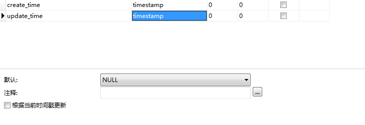

完整版配置类 1 2 3 4 5 6 7 8 9 10 11 12 13 14 15 16 17 18 19 20 21 22 23 24 25 26 27 28 29 30 31 32 33 34 35 36 37 38 39 40 41 42 43 44 45 46 47 import com.baomidou.mybatisplus.annotation.DbType;import com.baomidou.mybatisplus.core.handlers.MetaObjectHandler;import com.baomidou.mybatisplus.extension.plugins.MybatisPlusInterceptor;import com.baomidou.mybatisplus.extension.plugins.inner.OptimisticLockerInnerInterceptor;import com.baomidou.mybatisplus.extension.plugins.inner.PaginationInnerInterceptor;import lombok.extern.slf4j.Slf4j;import org.apache.ibatis.reflection.MetaObject;import org.mybatis.spring.annotation.MapperScan;import org.springframework.context.annotation.Bean;import org.springframework.context.annotation.Configuration;import org.springframework.transaction.annotation.EnableTransactionManagement;import java.util.Date;@Configuration @MapperScan("com.xatali.signplatform.mapper") @EnableTransactionManagement @Slf4j public class MysqlConfig implements MetaObjectHandler @Bean public MybatisPlusInterceptor mybatisPlusInterceptor () MybatisPlusInterceptor interceptor = new MybatisPlusInterceptor(); interceptor.addInnerInterceptor(new OptimisticLockerInnerInterceptor()); interceptor.addInnerInterceptor(new PaginationInnerInterceptor(DbType.H2)); return interceptor; } @Override public void insertFill (MetaObject metaObject) log.info("start insert fill..." ); this .setFieldValByName("createTime" , new Date(), metaObject); this .setFieldValByName("updateTime" , new Date(), metaObject); } @Override public void updateFill (MetaObject metaObject) log.info("start update fill..." ); this .setFieldValByName("updateTime" , new Date(), metaObject); } }
快速入门 地址：https://mp.baomidou.com/guide/quick-start.html
使用第三方组件：
导入对应的依赖
研究依赖配置
代码编写
提高扩展能力
1. 创建数据库 2. 建表及插入数据 1 2 3 4 5 6 7 8 9 10 11 12 13 14 15 16 17 18 19 DROP TABLE IF EXISTS user; CREATE TABLE user ( id BIGINT(20) NOT NULL COMMENT '主键ID', username VARCHAR(30) NULL DEFAULT NULL COMMENT '用户名', `password` VARCHAR(30) NULL DEFAULT NULL COMMENT '密码', realname VARCHAR(30) NULL DEFAULT NULL COMMENT '姓名', age INT(11) NULL DEFAULT NULL COMMENT '年龄', email VARCHAR(50) NULL DEFAULT NULL COMMENT '邮箱', PRIMARY KEY (id) ); INSERT INTO user (id, username, age, email) VALUES (1, 'Jone', 18, 'test1@baomidou.com'), (2, 'Jack', 20, 'test2@baomidou.com'), (3, 'Tom', 28, 'test3@baomidou.com'), (4, 'Sandy', 21, 'test4@baomidou.com'), (5, 'Billie', 24, 'test5@baomidou.com');
3. 编写项目 创建一个springboot项目
1. 添加依赖 低版本可能存在
1 2 3 4 5 6 7 8 9 10 11 12 13 14 15 16 17 18 <!-- 数据库驱动 --> <dependency> <groupId>mysql</groupId> <artifactId>mysql-connector-java</artifactId> </dependency> <!-- lombok --> <dependency> <groupId>org.projectlombok</groupId> <artifactId>lombok</artifactId> </dependency> <!-- mybatis-plus --> <dependency> <groupId>com.baomidou</groupId> <artifactId>mybatis-plus-boot-starter</artifactId> <version>3.3.1.tmp</version> </dependency>
2. 配置mysql驱动 mysql 5 与 mysql 8 驱动不同，mysql 8 需要增加时区的配置
1 2 3 4 5 6 7 8 9 10 11 12 13 spring: datasource: username: root password: root # jdbc:mysql:// 相当于http:// 表示协议 # localhost:3306 ip + 端口号 # boo_manage 连接的库 # userSSL=false 是否使用安全连接，使用mark电脑时使用安全连接有时会报错，因此使用false关闭 # useUnicode=true&characterEncoding=utf-8 设置字符集编码，存储数据时先将数据解码成字节码，然后再将解码后的字节码重新使用GBK编码存放到数据库中 # 在从数据库中取数据的时候，数据库会先将数据库中的数据按GBK格式解码成字节码，然后再将解码后的字节码重新按UTF-8格式编码数据，最后再将数据返回给客户端。 # serverTimezone=GMT%2B8 当使用 mysql 8 版本时，需要增加时区的配置 url: jdbc:mysql://localhost:3306/boo_manage?useUnicode=true&characterEncoding=utf-8&serverTimezone=GMT%2B8 driver-class-name: com.mysql.jdbc.Driver
3. 使用 对比 传统方式：pojo-dao（连接mybatis，配置mapp.xml文件）-service-controller
使用mybatis-plus之后：
使用 1. 创建实体类 1 2 3 4 5 6 7 8 9 10 11 12 13 14 15 16 17 import lombok.AllArgsConstructor; import lombok.Data; import lombok.NoArgsConstructor; @Data @AllArgsConstructor @NoArgsConstructor public class User { private Long id; private String username; private String password; private String realname; private int age; private String email; }
2. 添加mapper文件 1 2 3 4 5 6 7 8 9 10 11 12 import com.baomidou.mybatisplus.core.mapper.BaseMapper; import com.yoga.usermanage.entity.User; import org.springframework.stereotype.Repository; // 在对应的Mapper上继承基本的类 // 将步骤1中的实体类作为参数传入 @Repository public interface UserMapper extends BaseMapper<User> { // 所有的CRUD均已编写完成 // 不需要像以前配置一大堆文件 }
3. 主启动类中添加注解扫描所有的mapper文件 1 @MapperScan("com.yoga.usermanage.mapper")
4. 使用 由于其继承了mybatisplus的BaseMapper，因此基本的CRUD已经实现
配置日志 目前所有的sql是不可见的，若需要查看如何执行，则可以配置日志
配置控制台直接输出（也可配置使用log4j输出）：
1 2 3 4 5 mybatis-plus: configuration: log-impl: org.apache.ibatis.logging.stdout.StdOutImpl
使用 1. 插入测试及雪花算法 执行简单的插入语句 1 2 3 4 5 6 7 8 9 User user = new User(); user.setAge(10 ); user.setEmail("123456789@qq.com" ); user.setPassword("password" ); user.setRealname("realName" ); user.setUsername("userName" ); userMapper.insert(user); System.out.println(user);
打印的日志为：
可以发现：
参数中并未设置id，但是插入语句中会自动帮忙添加id
打印的用户对象中也是有id的，即id会自动回填
1 2 3 4 5 6 7 JDBC Connection [HikariProxyConnection@1906293869 wrapping com.mysql.jdbc.JDBC4Connection@9045cd3] will not be managed by Spring ==> Preparing: INSERT INTO user ( id, username, password, realname, age, email ) VALUES ( ?, ?, ?, ?, ?, ? ) ==> Parameters: 1390839264579297281(Long), userName(String), password(String), realName(String), 10(Integer), 123456789@qq.com(String) <== Updates: 1 Closing non transactional SqlSession [org.apache.ibatis.session.defaults.DefaultSqlSession@7f584df6] User(id=1390839264579297281, username=userName, password=password, realname=realName, age=10, email=123456789@qq.com)
主键生成策略 主键生成：uuid、自增id、雪花算法、redis、zookeeper
雪花算法 snowflake是Twitter开源的分布式ID生成算法，结果是一个long型的ID。
其核心思想是：使用41bit作为毫秒数，10bit作为机器的ID（5个bit是数据中心，5个bit的机器ID），12bit作为毫秒内的流水号（意味着每个节点在每毫秒可以产生 4096 个 ID），最后还有一个符号位，永远是0。可以保证几乎全球唯一！
详细说明
https://blog.csdn.net/lq18050010830/article/details/89845790
配置不同的主键生成策略
默认为： ID_WORKER（新版本使用ASSIGN_ID） 全局唯一id
实现主键自增
实体类字段上@TableId(type = IdType.AUTO)
数据库一定要是自增的
打开数据库：
设计表 -> 选项
可以看到自动递增的值，该值即为下次插入数据的id
其余类型
1 2 3 4 5 6 7 8 9 10 11 12 13 14 15 16 17 18 19 20 21 22 23 24 AUTO(0 ), NONE(1 ), INPUT(2 ), ASSIGN_ID(3 ), ASSIGN_UUID(4 ), @Deprecated ID_WORKER(3 ), @Deprecated ID_WORKER_STR(3 ), @Deprecated UUID(4 );
2. 更新操作 简单操作 1 2 3 4 User user = new User(); user.setUsername("newUserName" ); user.setId(1390945262396645379L ) userMapper.updateById(user);
3. 自动填充 创建时间、修改时间，这些操作都可以自动完成
方式一：数据库级别（工作中不允许修改数据库）
在表中新增字段create_time（timestamp），update_time（timestamp ）
设置默认值为 CURRENT_TIMESTAMP
勾选update_time下的根据当前时间戳更新
注： Navicat中datetime类型的不能选择根据当前时间戳更新
方式二：代码级别
删除数据库的默认值及更新操作！

实体类上加固有注解
1 2 3 4 5 6 @TableField(fill = FieldFill.INSERT) private Date createTime;@TableField(fill = FieldFill.INSERT_UPDATE) private Date updateTime;
编写处理器来处理这个注解
1 2 3 4 5 6 7 8 9 10 11 12 13 14 15 16 17 18 19 20 21 22 23 24 25 26 27 28 29 30 31 32 import com.baomidou.mybatisplus.core.handlers.MetaObjectHandler;import lombok.extern.slf4j.Slf4j;import org.apache.ibatis.reflection.MetaObject;import org.springframework.stereotype.Component;import java.util.Date;@Slf4j @Component public class MyMetaObjectHandler implements MetaObjectHandler @Override public void insertFill (MetaObject metaObject) log.info("start insert fill..." ); this .setFieldValByName("createTime" , new Date(), metaObject); this .setFieldValByName("updateTime" , new Date(), metaObject); } @Override public void updateFill (MetaObject metaObject) log.info("start update fill..." ); this .setFieldValByName("updateTime" , new Date(), metaObject); } }
4. 查询操作 1. 普通查询 1 2 3 4 5 6 7 8 9 10 11 12 13 14 15 16 17 18 @RequestMapping(value = "select") public String select () User user = userMapper.selectById(1391652173934858242L ); System.out.println(user); List<User> userList = userMapper.selectBatchIds(Arrays.asList(1391652173934858242L , 1391651981101731841L )); userList.forEach(System.out::println); Map<String, Object> map = new HashMap<>(); map.put("id" , 1390982665840857090L ); map.put("username" , "乐观锁测试2" ); userMapper.selectByMap(map).forEach(System.out::println); return "index" ; }
2. 分页查询 实现分页的方法
原始的limit进行分页
pageHelper等 第三方插件
MybatisPlus内置分页插件
使用
配置拦截器组件即可
1 2 3 4 5 6 7 8 9 @Bean public MybatisPlusInterceptor mybatisPlusInterceptor () MybatisPlusInterceptor interceptor = new MybatisPlusInterceptor(); interceptor.addInnerInterceptor(new OptimisticLockerInnerInterceptor()); interceptor.addInnerInterceptor(new PaginationInnerInterceptor(DbType.H2)); return interceptor; }
直接使用Page对象即可
1 2 3 4 5 6 Page<User> page = new Page<>(num, 5 ); Page<User> userPage = userMapper.selectPage(page, null ); List<User> records = userPage.getRecords(); records.forEach(System.out::println); System.out.println(userPage.getTotal());
可看出在查询数据前会先查询数据的条数，然后在查询数据
5. 删除操作 普通删除 1 2 3 4 5 6 7 8 9 10 Map<String, Object> map = new HashMap<>(); map.put("username" , "userName" ); userMapper.deleteByMap(map);
逻辑删除 说明
物理删除：从数据库中直接删除
逻辑删除：在数据库中没有被删除，而是通过一个变量来让其失效！deleted = 0 => deleted = 1
管理员可以查看被删除的记录！防止数据丢失，类似于回收站
实现
在数据库中添加标识删除的字段deleted
实体类中增加属性
1 2 @TableLogic private Integer deleted;
配置
1 2 3 4 5 6 mybatis-plus: global-config: db-config: logic-delete-field: deleted logic-delete-value: 1 logic-not-delete-value: 0
删除测试
可以看出，此时虽然执行的是删除操作但是并未执行delete操作而是update
6. 性能分析插件 MybatisPlus性能分析插件，如果超过这个事件就停止运行
作用：用于输出每条sql语句及其执行时间
使用
导入依赖
1 2 3 4 5 6 <dependency > <groupId > p6spy</groupId > <artifactId > p6spy</artifactId > <version > 3.9.1</version > </dependency >
引入的p6spy版本不能太低，否则会报
java.lang.AbstractMethodError: null
表示依赖冲突
修改使用p6spy连接数据库
1 2 3 4 spring: datasource: url: jdbc:p6spy:mysql://localhost:3306/book_manage?allowMultiQueries=true&useUnicode=true&characterEncoding=UTF-8&useSSL=false&serverTimezone=GMT driver-class-name: com.p6spy.engine.spy.P6SpyDriver
classpath下添加spy.properties
1 2 3 4 5 6 7 8 9 10 11 12 13 14 15 16 17 18 19 20 21 22 23 24 modulelist =com.baomidou.mybatisplus.extension.p6spy.MybatisPlusLogFactory,com.p6spy.engine.outage.P6OutageFactory logMessageFormat =com.baomidou.mybatisplus.extension.p6spy.P6SpyLogger appender =com.baomidou.mybatisplus.extension.p6spy.StdoutLogger deregisterdrivers =true useprefix =true excludecategories =info,debug,result,commit,resultset dateformat =yyyy-MM-dd HH:mm:ss outagedetection =true outagedetectioninterval =2
使用
打印效果
7. 条件查询器Wrapper 7.1 基本使用 1 2 3 4 5 6 7 8 9 10 11 12 13 14 15 16 17 18 19 20 21 22 23 24 25 26 27 28 29 30 31 32 33 34 35 36 37 38 39 40 QueryWrapper<User> userQueryWrapper = new QueryWrapper<>(); userQueryWrapper.isNull("realname" ).isNotNull("username" ).ge("age" , 12 ); List<User> users = userMapper.selectList(userQueryWrapper); users.forEach(System.out::println); QueryWrapper<User> userQueryWrapper1 = new QueryWrapper<>(); userQueryWrapper1.eq("username" , "乐观锁" ); User user = userMapper.selectOne(userQueryWrapper1); System.out.println("Wrapper: eq" + user); QueryWrapper<User> userQueryWrapper2 = new QueryWrapper<>(); userQueryWrapper2.between("age" , 10 , 15 ); Integer integer = userMapper.selectCount(userQueryWrapper2); System.out.println("age between 10 and 15 : " + integer); QueryWrapper<User> userQueryWrapper3 = new QueryWrapper<>(); userQueryWrapper3.notLike("username" , "乐观锁" ).likeRight("email" , "1" ); List<Map<String, Object>> maps = userMapper.selectMaps(userQueryWrapper3); System.out.println("like: " ); maps.forEach(System.out::println); QueryWrapper<User> userQueryWrapper4 = new QueryWrapper<>(); userQueryWrapper4.inSql("age" ,"select age from user where age > 12" ); List<Object> objects = userMapper.selectObjs(userQueryWrapper4); objects.forEach(System.out::println); QueryWrapper<User> userQueryWrapper5 = new QueryWrapper<>(); userQueryWrapper5.orderByDesc("id" ); userMapper.selectList(userQueryWrapper5);